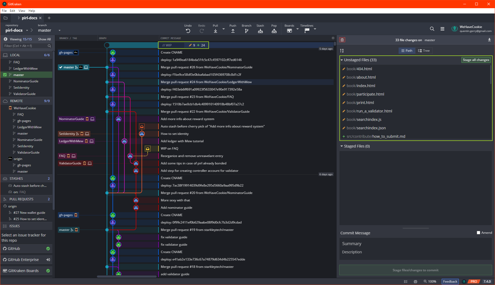
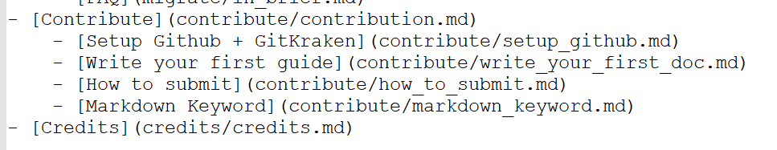

[Windows] How to write your first doc
Hey fellow, if you seek to contribute with pirl docs, the following guides should be usefull for people who didn't use github.
In this guide, you will see how to create a new guide.
Requirements
You will need to follow this guide first if not already done : Setup Github GitKraken
Setup
Each time you want to contribute, you will need to do this following step
Under File, click on Open Terminal

Then execute the following commande ..\mdbook.exe serve

You can reduce this window but do not close it (otherwise you will not be able to see your change in live)
Create your first guide
Now you are all set to create your first guide !
You can see other guide under pirl-docs\src like this

.md stand for markdown, it's a way to write document with bunch of usefull formating stuff
For example, let's create together the next guide of this serie ! (Guideception)
Create a new .md file (you can also duplicate an existing one)

For beginning, I'll just add the title

this snippet give this
[Windows] How to submit your contribution
Tips
#stand for title,##for subtitle,###sub-subtitle and so one
Then I add some text

this snippet give this
[Windows] How to submit your contribution
Hey fellow, Hey fellow, if you seek to contribute with pirl docs, the following guides should be usefull for people who didn't use github.
In this guide, you will see how to submit your contribution
Tips
You will need to add an extra line between your text if you want an line break
Then I add some link to other guides

this snippet give this
You will need to follow the 2 first guides :
Tips
If you want to add a link :
[DisplayName](MyPathOrURL)If you want bullet, simply add
-on each line
Then I add some pictures to my guide

this snippet give this
Firstly, if you go back on gitkraken, you will see some changes 
Tips
If you want to add a picture :
If you want to add a clickable picture (to allow user to see it in full screen) :
[<img src="ImgPath"/>](ImgPath)The path is based on the file location, you can add
..to access parent folder
You can find some usefull markdown keyword here
Finally, you will need to add your guide into the SUMMARY.md like this

And voila, it's now time to you to write your own guide and contribute to PIRL 
When you have finished writing your guide, you can move on to the next tutorial : How to submit
Written by WeHaveCookie